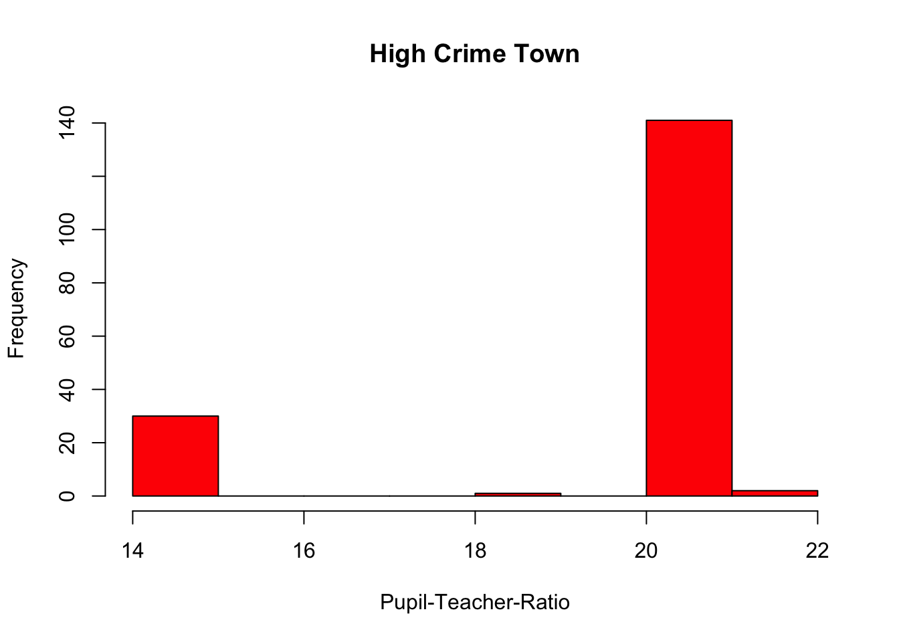
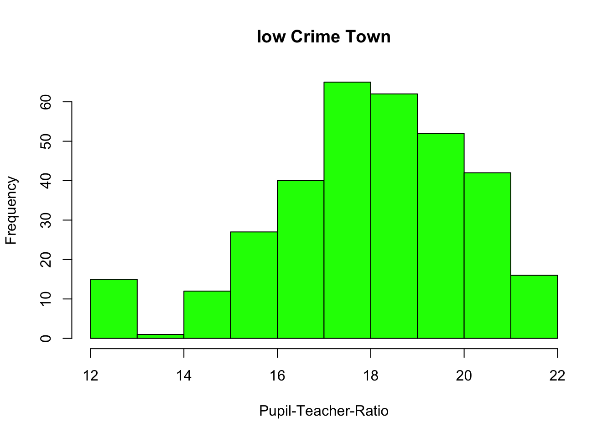

options(repos = c(CRAN = "https://cloud.r-project.org"))
library(haven)
angell_stata <- read_dta("angell.dta")Weishan-HW1
Turn in this assignment as an HTML or PDF file to ELMS. Make sure to include the R Markdown or Quarto file that was used to generate it. You should include the questions in your solutions. You may use the qmd file of the assignment provided to insert your answers.
Git and GitHub
1) Provide the link to the GitHub repo that you used to practice git from Week 1. It should have:
Your name on the README file.
At least one commit with your name, with a description of what you did in that commit.
Reading Data
Download both the Angell.dta (Stata data format) dataset and the Angell.txt dataset from this website: https://stats.idre.ucla.edu/stata/examples/ara/applied-regression-analysis-by-fox-data-files/
2) Read in the .dta version and store in an object called angell_stata.
3) Read in the .txt version and store it in an object called angell_txt.
angell_txt <- read.table("Angell.txt")4) What are the differences between angell_stata and angell_txt? Are there differences in the classes of the individual columns?
print(sapply(angell_stata,class)) city morint ethhet geomob region
"character" "numeric" "numeric" "numeric" "character" print(sapply(angell_txt,class)) V1 V2 V3 V4 V5
"character" "numeric" "numeric" "numeric" "character" - The column names of this two data sets are different. The classes between columns are different, which are numeric and character
5) Make any updates necessary so that angell_txt is the same as angell_stata.
library(plyr)
angell_txt <- plyr::rename (angell_txt, c("V1"="city","V2" = "morint", "V3" = "ethhe", "V4" ="geomob", "V5" = "region" ))
print(class(angell_txt) == class(angell_stata))[1] FALSE FALSE TRUElibrary(dplyr)
angell_txt <- as_tibble(angell_txt)
print(class(angell_txt) == class(angell_stata))[1] TRUE TRUE TRUE- After converting the column names and the type of
angell_txtto match those ofangell_stata,angell_txtis the same asangell_stata
6) Describe the Ethnic Heterogeneity variable. Use descriptive statistics such as mean, median, standard deviation, etc. How does it differ by region?
eh_1 <- aggregate(ethhet ~ region, angell_stata, FUN = mean)
eh_2 <- aggregate(ethhet ~ region, angell_stata, FUN = sd)
eh_3<- aggregate(ethhet ~ region, angell_stata, FUN = median)
eh_4 <- merge(eh_1, eh_2, by = "region")
rm(eh_1, eh_2)
eh_5 <- merge(eh_3, eh_4, by = "region")
rm(eh_3, eh_4)
plyr::rename(eh_5, c("ethhet"="mean","ethhet.x"="sd","ethhet.y"="median")) region mean sd median
1 E 22.10 23.48889 10.773398
2 MW 19.25 21.67857 9.084914
3 S 53.80 52.48571 21.440897
4 W 16.15 16.55000 4.164012rm(eh_5)From the table above, the S region has the highest mean, standard deviation and median among the 4 regions, while the W region has the lowest standard deviation and median.
Describing Data
R comes also with many built-in datasets. The “MASS” package, for example, comes with the “Boston” dataset.
7) Install the “MASS” package, load the package. Then, load the Boston dataset.
install.packages("MASS", repos = "https://cran.rstudio.com/")
The downloaded binary packages are in
/var/folders/j1/xvfjxggx4jsbvlm6fzlxhw_w0000gn/T//RtmpDYGrMI/downloaded_packagesinstall.packages("MASS")
The downloaded binary packages are in
/var/folders/j1/xvfjxggx4jsbvlm6fzlxhw_w0000gn/T//RtmpDYGrMI/downloaded_packageslibrary(MASS)
data("Boston")
head(Boston) crim zn indus chas nox rm age dis rad tax ptratio black lstat
1 0.00632 18 2.31 0 0.538 6.575 65.2 4.0900 1 296 15.3 396.90 4.98
2 0.02731 0 7.07 0 0.469 6.421 78.9 4.9671 2 242 17.8 396.90 9.14
3 0.02729 0 7.07 0 0.469 7.185 61.1 4.9671 2 242 17.8 392.83 4.03
4 0.03237 0 2.18 0 0.458 6.998 45.8 6.0622 3 222 18.7 394.63 2.94
5 0.06905 0 2.18 0 0.458 7.147 54.2 6.0622 3 222 18.7 396.90 5.33
6 0.02985 0 2.18 0 0.458 6.430 58.7 6.0622 3 222 18.7 394.12 5.21
medv
1 24.0
2 21.6
3 34.7
4 33.4
5 36.2
6 28.78) What is the type of the Boston object?
typeof(Boston)[1] "list"- The type of Boston object is “list”
9) What is the class of the Boston object?
class(Boston)[1] "data.frame"- The class of Boston object is “data frame”
10) How many of the suburbs in the Boston data set bound the Charles river?
sum(Boston$chas == 1, na.rm = TRUE)[1] 35- There is \(35\) suburbs in the Boston data set bound the Charles river.
11) Do any of the suburbs of Boston appear to have particularly high crime rates? Tax rates? Pupil-teacher ratios? Comment on the range of each variable.
c(min(Boston$crim), max(Boston$crim))[1] 0.00632 88.97620c(min(Boston$tax), max(Boston$tax))[1] 187 711c(min(Boston$ptratio), max(Boston$ptratio))[1] 12.6 22.0- The range of crime rates in Boston is \([0.00632, 88.9762]\), while the range of tax rates and pupil-teacher ratios are \([187,711]\) and \([12.6,22.0]\) respectively.
12) Describe the distribution of pupil-teacher ratio among the towns in this data set that have a per capita crime rate larger than 1. How does it differ from towns that have a per capita crime rate smaller than 1?
library(dplyr)
highrate_crim <- Boston[Boston$crim > 1,]
lowrate_crim<- Boston[Boston$crim <= 1,]
stat_highrate_crim <- highrate_crim %>%
summarise(
mean_hc_ptra <- mean(ptratio),
median_hc_ptra<-median(ptratio),
sd_hc_ptra<- median(ptratio),
min_hc_ptra <- min(ptratio),
max_hc_ptra <- max(ptratio)
)
stat_highrate_crim mean_hc_ptra <- mean(ptratio) median_hc_ptra <- median(ptratio)
1 19.29425 20.2
sd_hc_ptra <- median(ptratio) min_hc_ptra <- min(ptratio)
1 20.2 14.7
max_hc_ptra <- max(ptratio)
1 21.2stat_lowrate_crim <- lowrate_crim %>%
summarise(
mean_lc_ptra <- mean(ptratio),
median_lc_ptra <- median(ptratio),
sd_lc_ptra <- median(ptratio),
min_lc_ptra <- min(ptratio),
max_lc_ptra <- max(ptratio)
)
stat_lowrate_crim mean_lc_ptra <- mean(ptratio) median_lc_ptra <- median(ptratio)
1 18.01596 18.3
sd_lc_ptra <- median(ptratio) min_lc_ptra <- min(ptratio)
1 18.3 12.6
max_lc_ptra <- max(ptratio)
1 22hist(highrate_crim$ptratio, main = "High Crime Town",xlab= "Pupil-Teacher-Ratio", col="red")
hist(lowrate_crim$ptratio, main = "low Crime Town",xlab= "Pupil-Teacher-Ratio", col="green")
We can observe that the distribution of pupil- teacher ratio in the town with a high crime rate (crime rate >1) is significantly different from that in low crime town (crime rate <1). In high crime rate towns, the distribution is non-uniform and clustered around 20, with only few towns having a pupil-teacher ratio of 14 or 19.
In contrast, in low crime town, the distribution of pupil- teacher ratio is more inform and following an approximate normal distribution with a median around 18. There are more towns with low pupil-teacher ratior in low crime rate areas compares to high crime rate areas.
In conclusion, High crime rate towns may face a shortage of educational resources, while low crime rate towns have more adequate educational resourses.
Writing Functions
13) Write a function that calculates 95% confidence intervals for a point estimate. The function should be called my_CI. When called with my_CI(2, 0.2), the function should print out “The 95% CI upper bound of point estimate 2 with standard error 0.2 is 2.392. The lower bound is 1.608.”
Note: The function should take a point estimate and its standard error as arguments. You may use the formula for 95% CI: point estimate +/- 1.96*standard error.
Hint: Pasting text in R can be done with: paste() and paste0()
my_CI <-function( point_estimate, standard_error){
upper_bound <- point_estimate + 1.96*standard_error
lower_bound <- point_estimate - 1.96*standard_error
message(paste0("The 95% CI upper bound of point estimate 2 with standard error 0.2 is",upper_bound,", The lower bound is ",low_bound,"."))
my_CI (2, 0.2)
}14) Create a new function called my_CI2 that does that same thing as the my_CI function but outputs a vector of length 2 with the lower and upper bound of the confidence interval instead of printing out the text. Use this to find the 95% confidence interval for a point estimate of 0 and standard error 0.4.
my_CI2 <- function(point_estimate, standard_error) {
upper_bound <- point_estimate + 1.96*standard_error
lower_bound <- point_estimate - 1.96*standard_error
return(c(upper_bound,lower_bound))
}
my_CI2(0 , 0.4)[1] 0.784 -0.784- The confidence interval for a point estimate of 0 and standard error 0.4 is \([0.784,-0.784]\)
15) Update the my_CI2 function to take any confidence level instead of only 95%. Call the new function my_CI3. You should add an argument to your function for confidence level.
Hint: Use the qnorm function to find the appropriate z-value. For example, for a 95% confidence interval, using qnorm(0.975) gives approximately 1.96.
my_CI3 <- function(point_estimate, standard_error, confidence_level){
z <- qnorm(1- (1-confidence_level)/2)
upper_bound <- point_estimate + z*standard_error
lower_bound <- point_estimate - z*standard_error
return(c(upper_bound,lower_bound))
}
my_CI3(0,0.4,0.9) #test with a 90% confidence interval [1] 0.6579415 -0.657941516) Without hardcoding any numbers in the code, find a 99% confidence interval for Ethnic Heterogeneity in the Angell dataset. Find the standard error by dividing the standard deviation by the square root of the sample size.
mean_ethhet <- mean(angell_stata$ethhet)
se_ethhet <- sd(angell_stata$ethhet)/sqrt(nrow(angell_stata))
my_CI_ethhet <- function(point_estimate, se_ethhet,confidence_level){
z <- qnorm(1-(1-confidence_level)/2)
upper_bound <- (mean_ethhet + z*se_ethhet)
lower_bound <- (mean_ethhet - z*se_ethhet)
return(c(upper_bound,lower_bound))
}
my_CI_ethhet(mean_ethhet,se_ethhet,0.99)[1] 39.38993 23.35425The 99% confidence interval for Ethnic Heterogeneity in the Angell dataset is \([39.38993, 23.35425]\)
17) Write a function that you can apply to the Angell dataset to get 95% confidence intervals. The function should take one argument: a vector. Use if-else statements to output NA and avoid error messages if the column in the data frame is not numeric or logical.
my_CI4 <- function(vector){
if(is.numeric(vector) | is.logical(vector)) {
mean_vector <- mean(vector)
se_vector <- sd(vector)/sqrt(length(vector))
z <- qnorm(1-(1-0.95)/2)
upper_bound <- (mean_vector + z*se_vector)
lower_bound <- (mean_vector - z*se_vector)
return (c(upper_bound,lower_bound))
}
else {
return (NA)
}
}
lapply(angell_stata, my_CI4)$city
[1] NA
$morint
[1] 12.26758 10.13242
$ethhet
[1] 37.47292 25.27127
$geomob
[1] 30.52347 24.67187
$region
[1] NA